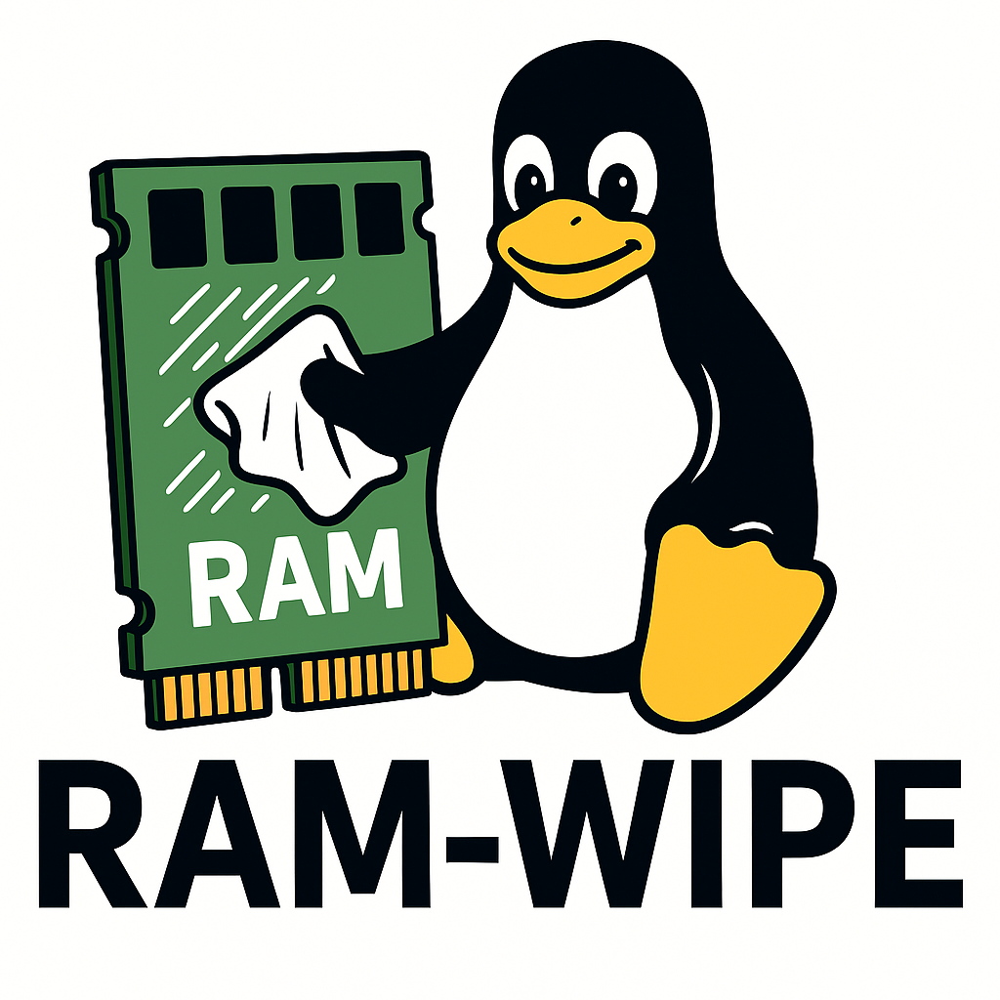

We believe security software like Kicksecure needs to remain Open Source and independent. Would you help sustain and grow the project? Learn more about our 11 year success story and maybe DONATE!

Wipe RAM at shutdown to prevent information extraction from memory.
ram-wipe is a software project designed to protect against RAM extraction attacks by erasing the contents of a computer's random access memory (RAM) when the system is shut down or restarted. This helps prevent attackers from recovering sensitive data that may have been temporarily stored in RAM.
ram-wipe is especially useful for organizations that work with confidential information and need an extra layer of security. By clearing the RAM during shutdown or reboot, ram-wipe reduces the risk of data theft through RAM extraction and improves overall system security.
Introduction
RAM extraction attacks have been a known method to steal information from computers since at least 2008. [1] Many people assume that all data in RAM disappears as soon as a computer is turned off, but this isn't always true. In some cases, the contents of RAM can remain for several seconds or even minutes after power loss.
Research by 3MDEB [2] confirms that this type of attack still works with modern RAM like DDR4 and DDR5, which are common in today's computers. Sometimes RAM is wiped instantly after shutdown or power loss, but in many cases the contents can stay for a few seconds, or even minutes.
Since at least 2011, the Linux live operating system Tails has included a RAM wiping feature during shutdown. [3] (Live systems are run from USB sticks or DVDs.) However, Tails' documentation explains that this feature has limitations.
Until recently, no other Linux distributions like Debian or Fedora included RAM wiping by default.
In 2023, the ram-wipe package was released as a new
solution. It wipes RAM during Linux kernel reboot or shutdown sequences,
helping prevent data from being recovered later. There has also been a
ram-wipe
security-audit by 3MDEB in 2025.
ram-wipe works on Debian, Kicksecure, and possibly other
Linux systems. It can also be adapted for other Linux-based setups or
devices.
The tool uses a dracut module, a plugin for the
Dracut tool, which helps create the early environment used when the
system boots. Many Linux distributions already include Dracut, so
packaging ram-wipe for other systems is easier.
ram-wipe is free to use and Open Source. The source code is
available and has minimal dependencies (which are other software that
must be present for a program to work). It is also Freedom Software,
meaning anyone can study, modify, and share it under its license.
However, software-based RAM wiping (like ram-wipe or the
feature in Tails) has a key limitation: It only works if the
system shuts down properly. For example, it will not protect
from some of the cold boot attacks when the device suddenly loses power
(for example when the power supply is being unplugged suddenly), and the
software execution flow is broken. In such case, ram-wipe
will not have a chance to be launched.
For technical details on ram-wipe using
initramfs-tools (a tool for building the early boot
environment, similar to Dracut), see: Status of initramfs-tools Support.
See also:
History Summary
2008 Public attack demonstration.
Cold boot and other RAM extraction attacks were publicly documented, showing that RAM contents can persist briefly after power loss and may be recoverable. [4]
2011 Tails-specific RAM wiping without Full Disk Encryption (FDE) support
The Linux live operating system Tails added a RAM wiping feature on shutdown, demonstrating early practical defenses while also documenting important limitations. [5] Tails lacked FDE support because it is primarily used as a live system, not as an installed operating system with FDE.
2023 dracut-based ram-wipe with Full Disk Encryption (FDE) support.
The ram-wipe package was released as a dedicated
solution for wiping RAM during Linux reboot and shutdown sequences.
[6]
2025 ram-wipe security audit.
Security audit efforts examined ram-wipe and modern RAM
remanence behavior, helping validate the continued relevance of RAM
wiping defenses. [2]
Installation of ram-wipe
1. Platform specific notice.
- Debian: Debian comes with
initramfs-toolsby default. - Kicksecure: Newer builds of Kicksecure come with
dracutby default. - Qubes: Unsupported. [7]
2. Migrate to dracut.
[8]
It's required to migrate to dracut if not already done.
See instructions on the dracut
wiki page to find out if dracut is already installed and to find
instructions on how to install it.
3. Reboot.
This is to test if dracut is functional. If the system
boots normally, then everything is okay.
4. Add Kicksecure APT repository.
Note: Users of Kicksecure can skip this step.
1 Download the Signing Key used to verify Kicksecure packages.
wget https://www.kicksecure.com/keys/derivative.asc
2 Optional: Verify the Signing Key to improve security assurances.
3 Install the Kicksecure signing key into the system keyring so APT can trust the repository.
sudo cp derivative.asc /usr/share/keyrings/derivative.asc
4 Review the available Kicksecure APT repository options.
Optional: See Kicksecure Packages for Debian Hosts and Kicksecure Host Enhancements instead of the next step for more secure and advanced configurations.
5 Add the Kicksecure APT repository to the system.
echo "Types: deb URIs: https://deb.kicksecure.com Suites: trixie Components: main contrib non-free Enabled: yes Signed-By: /usr/share/keyrings/derivative.asc" | sudo tee /etc/apt/sources.list.d/derivative.sources
5. Install ram-wipe.
sudo apt update
sudo apt install ram-wipe
6. Done.
The process of installing ram-wipe has been completed.
Host vs VMs
ram-wipe is useful on the host operating system but not so much inside a VM. See also Dev/RAM_Wipe#ram-wipe_Testing_inside_a_VM.
Sample Printout
Boot Printout
None.
Shutdown Printout
[ 42.474323] dracut INFO: wipe-ram.sh: RAM extraction attack defense... Starting RAM wipe pass during shutdown...
[ 42.501159] dracut INFO: wipe-ram.sh: RAM wipe pass completed, OK.
[ 42.502837] dracut INFO: wipe-ram.sh: Checking if there are still mounted encrypted disks...
[ 42.508801] dracut INFO: wipe-ram.sh: Success, there are no more mounted encrypted disks, OK.
[ 42.530125] reboot: Restarting systemram-wipe Known Issues
- Wiping the video RAM (the RAM of the graphics card) has not been implemented anywhere to the knowledge of the author. [9]
Unmount Encrypted Root Disk to Wipe Full Disk Encryption Key
To wipe the LUKS full disk encryption (FDE) for the root disk from RAM it is required to unmount the root disk file system and close the root disk LUKS volume during the shutdown process.
This has been implemented as per dracut shutdown hook to close encrypted devices and wipe their encryption keys from kernel memory.
ram-wipe attempts to check if unencrypted root disks have been unmounted at the end of the shutdown process and to inform the user in case of potential failures.
Status
- ram-wipe is installed by default in Kicksecure 18 (and above).
Development
- RAM Extraction Attack Defense - RAM Wipe Design Documentation
- Is RAM Wipe possible? Cold Boot Attack Defense
Footnotes
- https://en.wikipedia.org/w/index.php?title=Cold_boot_attack&oldid=249088610
- * Research of RAM data remanence times * Research of RAM data remanence times, part 2 * Conclusions from RAM data remanence tests
- https://web.archive.org/web/20110423165633/https://tails.boum.org/contribute/design/memory_erasure/
- https://en.wikipedia.org/w/index.php?title=Cold_boot_attack&oldid=249088610
- https://web.archive.org/web/20110423165633/https://tails.boum.org/contribute/design/memory_erasure/
- https://github.com/Kicksecure/ram-wipe
- * Qubes feature request: Wipe RAM on shutdown
- Since ram-wipe is unavailable for
initramfs-toolsthe user needs to migrate todracut, the only supported initrd creator by ram-wipe. - Erase video memory on shutdown
Categories: Documentation